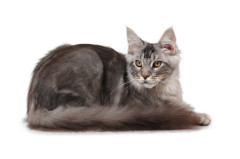

Cat Library!
Most Common Pet Cats in America
- Exotic Shorthair Cats
- Ragdoll Cats
- British Shorthair
- Persian Cats
- Maine Coon Cats
- American Shorthair Cats
- Scottish Fold Cats
- Sphynx Cats
- Abyssinian Cats
- Devon Rex Cats


Quick Facts!
The Maine Coon Cat is the official state cat of Maine
Image Source
More Popular Cats Include: